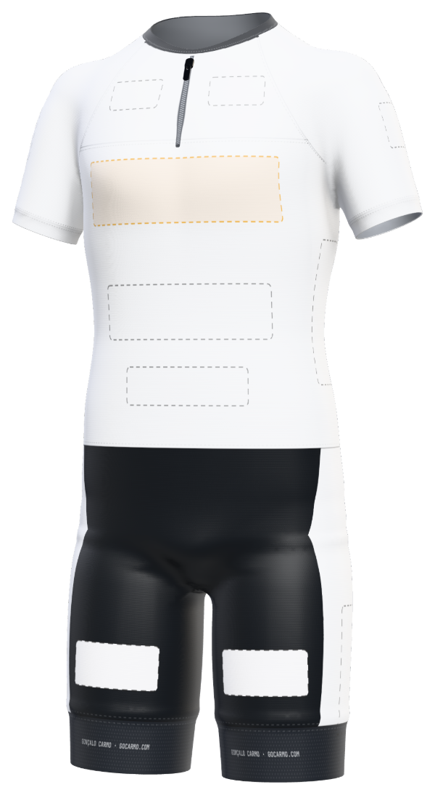
O fato
20 espaçosdesde 60 €
Em todos os triatlos, salvo exceções, e em treino.
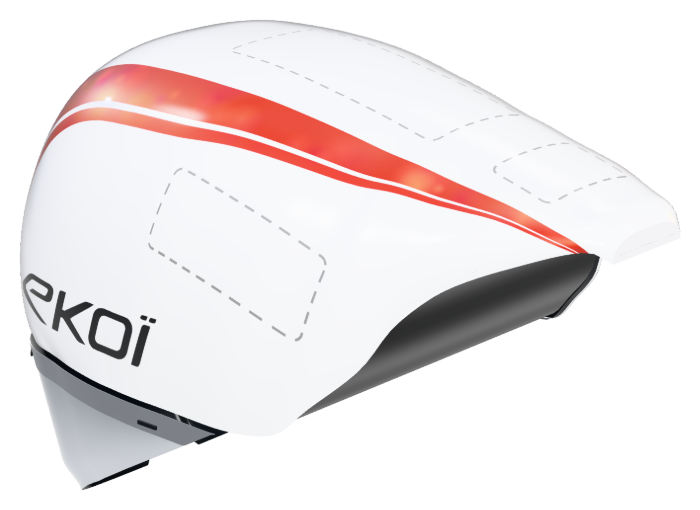
O capacete
4 espaçosdesde 100 €
Na bicicleta, em todos os triatlos, salvo exceções.
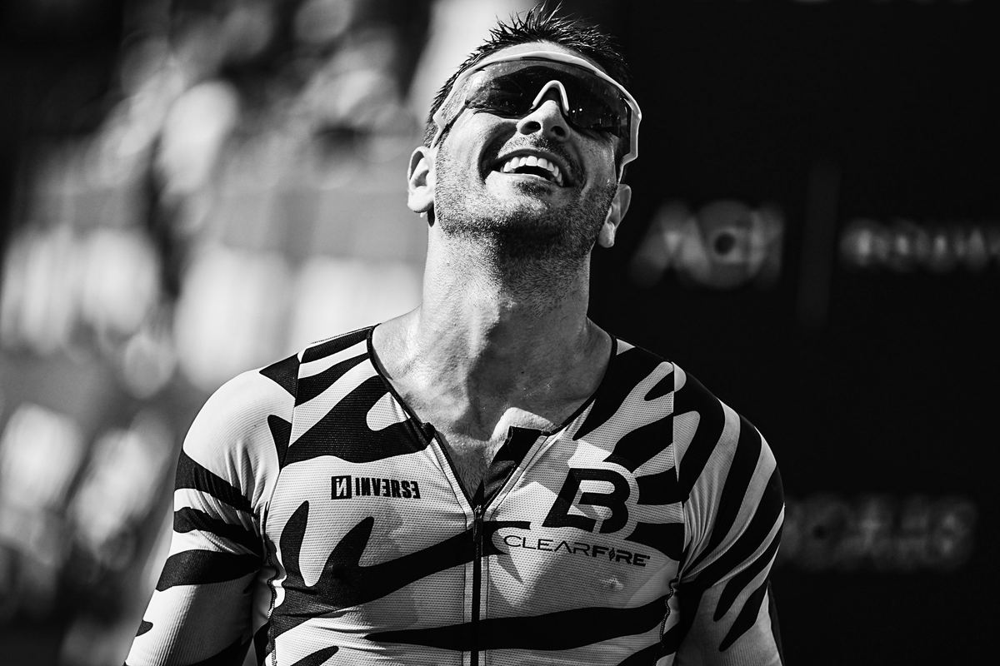
Triatleta · Lisboa
Cada prova, cada treino
Fiz motocross de competição durante mais de dez anos. Estreei-me no triatlo em 2025 e, no ano seguinte, fiz o IRONMAN Portugal-Cascais em 9h35. Agora quero viver do triatlo com marcas na equipa, como no motocross. Em 2027, a prova-alvo é Kona.
Porquê agora
Este ano fiquei no top 3% da geral em Setúbal, em Sines e no IRONMAN Cascais. O passo seguinte é ter marcas comigo o ano inteiro, em cada prova e nos treinos. Os preços de 2027 ainda são de primeira época.
4.º do escalão na estreia, em Caminha. Em outubro, 4:27 no IRONMAN 70.3 Cascais, 31.º entre 2 353 atletas.
1.º do escalão em Sines, 2.º em Setúbal, 2:44 na Maratona de Sevilha e 9:35:08 no IRONMAN Portugal-Cascais.
De fevereiro a setembro, em Portugal e Espanha, com um IRONMAN de qualificação ainda por escolher. Com a vaga, a época acaba em Kona.
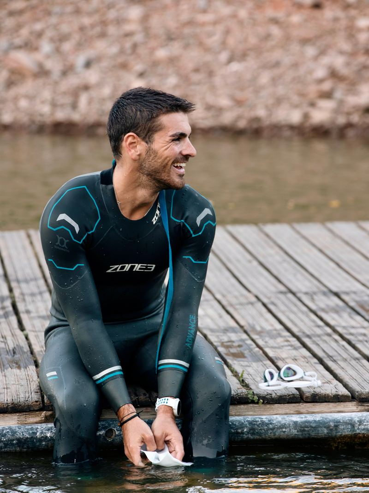
01 · História
Comecei a competir aos nove anos e fiz mais de dez épocas nos campeonatos nacionais de Portugal e de Espanha. Foi aí que aprendi a treinar com método.
Deixei a mota em 2021. Quando experimentei o triatlo, em 2025, a bicicleta e a corrida saíram-me bem desde o início. Devo-o aos anos de motocross.
Hoje treino com a LB Squad Portugal, duas vezes por dia e perto de 21 horas por semana. No motocross os patrocinadores sempre fizeram parte da equipa, e é assim que quero trabalhar no triatlo.
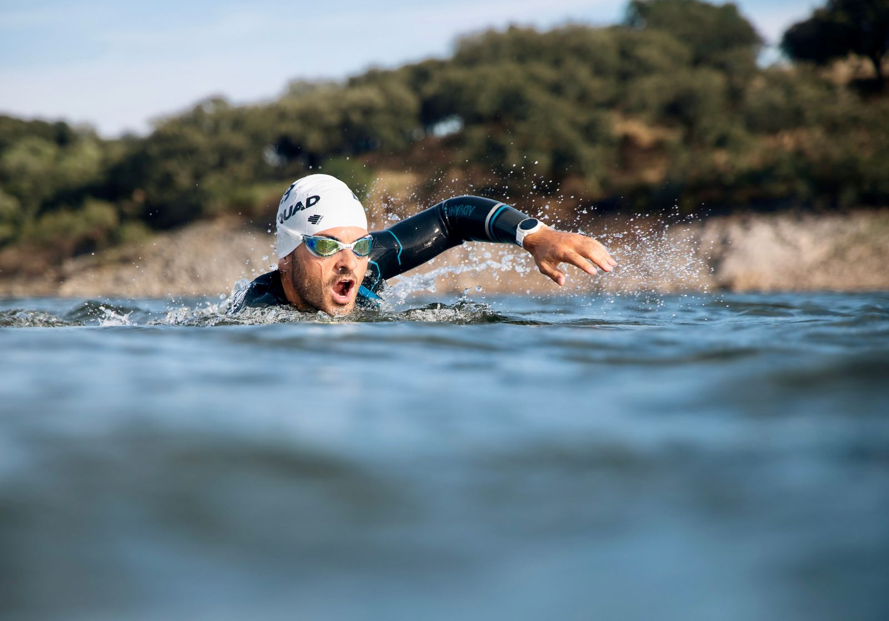
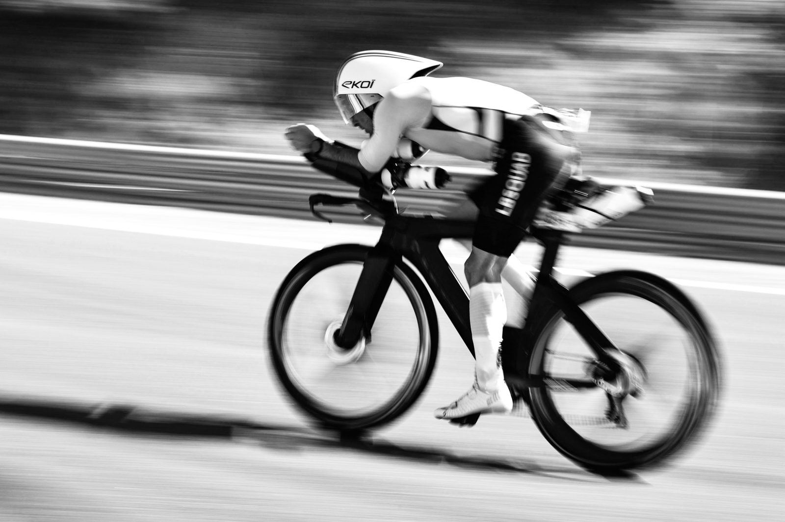
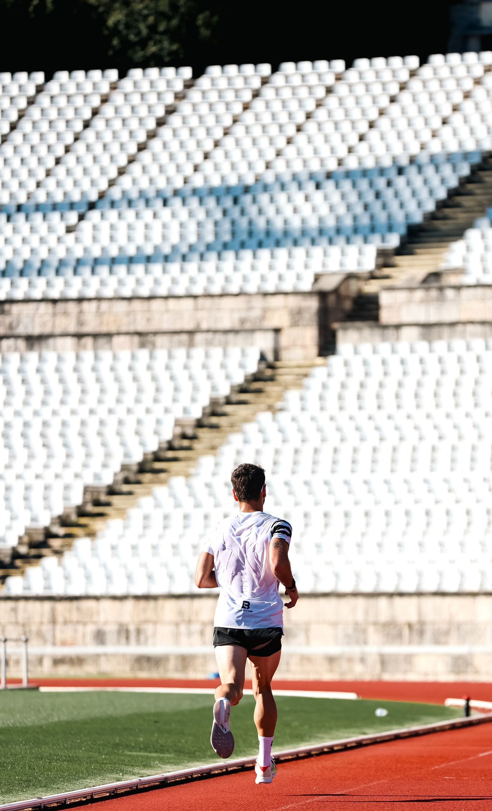
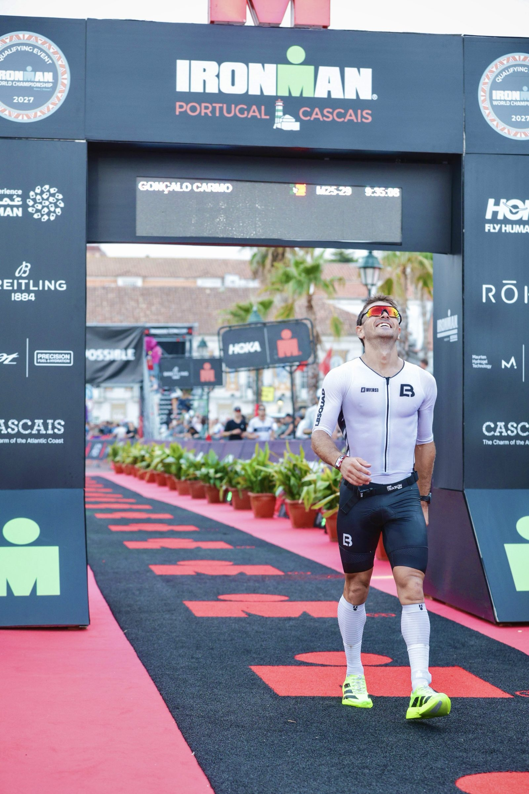
Natação · 3,8 km
Em Kona, a prova-alvo, nada-se no mar e sem neoprene. Em Cascais, com fato, nadei 1:01:42.
Ciclismo · 180 km
São cinco horas entre campos de lava, com vento lateral. Em cada triatlo, é na bicicleta que o fato e o capacete se veem mais tempo. Em Cascais demorei 4h56.
Corrida · 42,2 km
A maratona corre-se ao calor, depois dos 180 km de bicicleta. Fiz 3h27 em Cascais.
Meta · Aliʻi Drive
É a imagem que fica de cada prova e a que mais se partilha, com o fato de frente para a câmara.
02 · Resultados
Resultados oficiais de 2025 e 2026, por ordem. Em cada prova, o tempo final e a parte do pelotão que terminou atrás.
do pelotão terminou atrás
1 quadrado = 1% dos atletas
9 provas · 2025-2026
Da mais recente à mais antiga, com o lugar no escalão e na geral e os parciais dos triatlos.
Cascais, Portugal3,8 · 180 · 42,2 km
Tempo final: 9:35:08
Escalão12.º de 321 · M25-29
T1 6:00 · T2 3:22
Geral52.º de 1 98197,3% atrás
Sines, Portugal2 · 80 · 18 km
Tempo final: 3:42:32
Escalão1.º de 83 · M25-29
T1 2:27 · T2 1:52
Geral6.º de 74399,1% atrás
Lisboa, Portugal10 km
Tempo final: 33:48
Ritmo3:23 /km
10 km a 3:23 por quilómetro.
Geral15.º de 4 69499,6% atrás
Setúbal, Portugal1,9 · 90 · 21,1 km
Tempo final: 4:26:49
Escalão2.º de 84 · M25-29
T1 3:05 · T2 0:55
Geral11.º de 80298,6% atrás
Sevilha, Espanha42,2 km
Tempo final: 2:44:13
Ritmo3:54 /km
Primeira maratona abaixo das 2h45.
Geral698.º de 12 44994,3% atrás
Cascais, Portugal21,1 km
Tempo final: 1:19:48
Ritmo3:47 /km
Meia maratona a 3:47 por quilómetro.
Geral41.º de 4 17999,0% atrás
Lisboa, Portugal21,1 km
Tempo final: 1:16:56
Ritmo3:39 /km
A minha melhor meia maratona, a 3:39 por quilómetro.
Geral28.º de 5 30599,4% atrás
Cascais, Portugal1,9 · 90 · 21,1 km
Tempo final: 4:27:16
Escalão7.º de 151 · M18-24
T1 4:23 · T2 2:35
Geral31.º de 2 35398,6% atrás
Caminha, Portugal1,9 · 90 · 20,7 km
Tempo final: 4:32:54
Escalão4.º · 20-24
T1 2:24 · T2 1:18
Geral61.º de 36083,0% atrás
Fonte: classificações oficiais. Os percursos variam, por isso os tempos não se comparam diretamente.
03 · Telemetria
Registo todos os treinos no Strava. Quem me patrocina pode acompanhar o volume semana a semana.
Natação, bicicleta e corrida, com distância, ritmo e desnível de cada sessão.
04 · Objetivos
Sete provas em Portugal e Espanha, de fevereiro a setembro, com um IRONMAN de qualificação para Kona. As provas IRONMAN têm fotógrafos oficiais. Antes e depois de cada prova, publico com os patrocinadores identificados. Entre provas, também treino com o fato.
Se ganhar a vaga, Kona em direto. Em 2025, o Campeonato do Mundo passou em direto e de graça no YouTube, na DAZN e no site da IRONMAN, com imagens de helicóptero e drone.
Datas oficiais a 22 de outubro de 2026. O IRONMAN de qualificação ainda está por definir. Kona entra no calendário quando a vaga estiver garantida. Transmissão: media kit IRONMAN 2025.
05 · Patrocínio
24 espaços: 20 no fato e 4 no capacete

O fato
20 espaçosdesde 60 €
Em todos os triatlos, salvo exceções, e em treino.

O capacete
4 espaçosdesde 100 €
Na bicicleta, em todos os triatlos, salvo exceções.
Viver do triatlo depende de patrocinadores, e é no fato e no capacete que eles aparecem. Em 2027 vou usar os dois em todos os triatlos, salvo exceções, e o fato também em treino. Escolhe um espaço, experimenta o teu logótipo no modelo e envia o pedido.
De 60 € a 600 € por espaço, na época 2027. O fato completo (os 20 espaços do fato), com exclusividade de setor, custa 3 000 €. Para ver a tabela e reservar, escreve para allez@gocarmo.com ou manda mensagem por WhatsApp.
20 espaços, de 60 € a 600 €. Uso-o em todos os triatlos, salvo exceções, e em treino.
Para cada espaço vês o tamanho real, o preço para 2027 e onde aparece: na bicicleta, na corrida, na meta e nas redes.
PNG, JPG, WebP ou SVG até 5 MB. O ficheiro não sai do teu dispositivo.
Os 20 espaços do fato, a tua marca ao lado do meu nome na bio, no media kit e no material de imprensa, e exclusividade no teu setor em 2027. Antes de pagares, fechamos tudo num acordo escrito.
4 espaços, de 100 € a 300 €. Uso-o na bicicleta, em todos os triatlos, salvo exceções.
Para cada espaço vês o tamanho real, o preço para 2027 e onde aparece: na bicicleta, na corrida, na meta e nas redes.
Um ou vários espaços, no fato e no capacete. A partir de três, tens 10% de desconto.
Envias o pedido com o logótipo. O espaço fica reservado durante 48 horas, à espera do comprovativo.
Por transferência, ou MB WAY até 2 000 €, com a referência dos espaços no descritivo. Recebes um recibo de donativo.
O espaço fecha e a tua marca aparece aqui, no fato ou no capacete. No equipamento real, entra antes do primeiro triatlo da época, se o logótipo chegar até 15 de fevereiro.
Condições do patrocínio. O que inclui um espaço, o que fica de fora e quando uma prova pode ter um parceiro de prova.
06 · Media
Publico cada prova e partes do treino no Instagram e no TikTok.
A taxa de interação é a média de gostos e comentários por publicação a dividir pelo número de seguidores. Dados das 12 publicações mais recentes de @goncalo.carmo99, outubro de 2026.
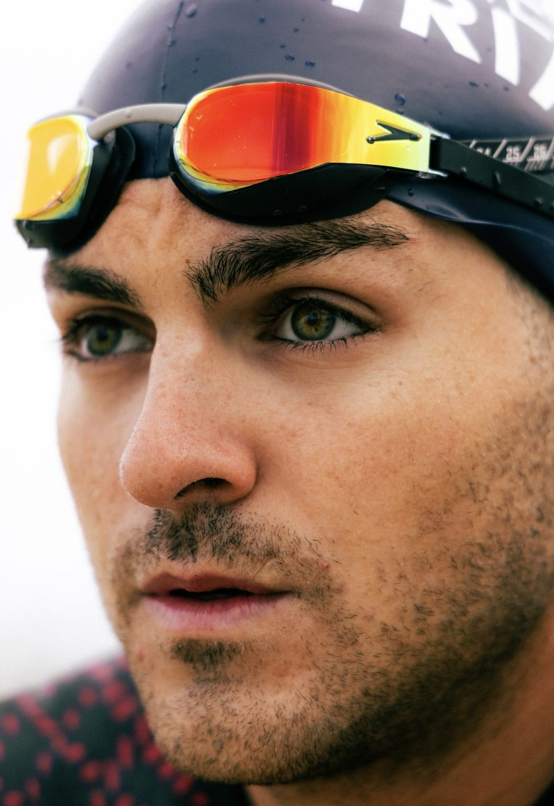
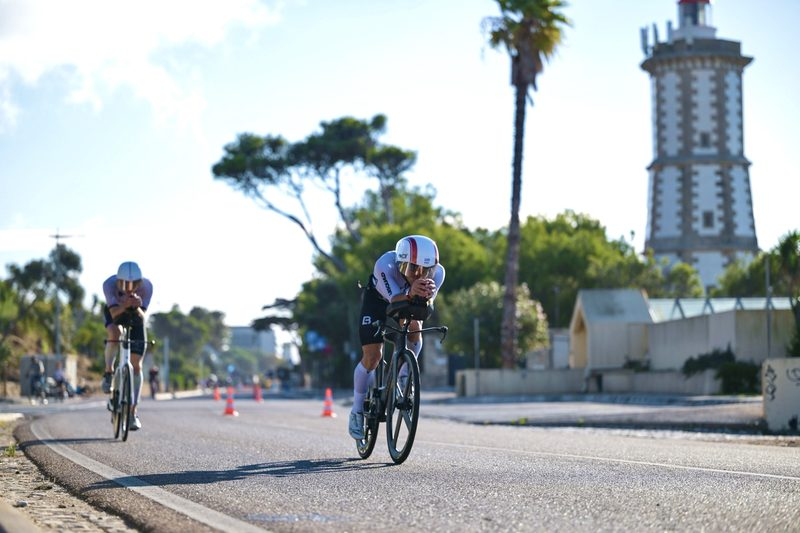
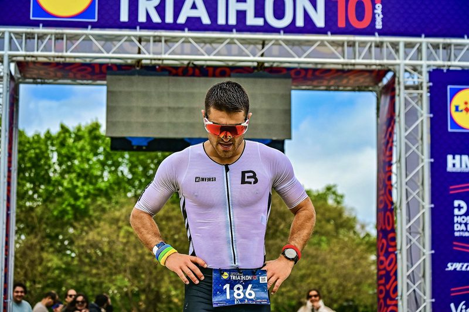
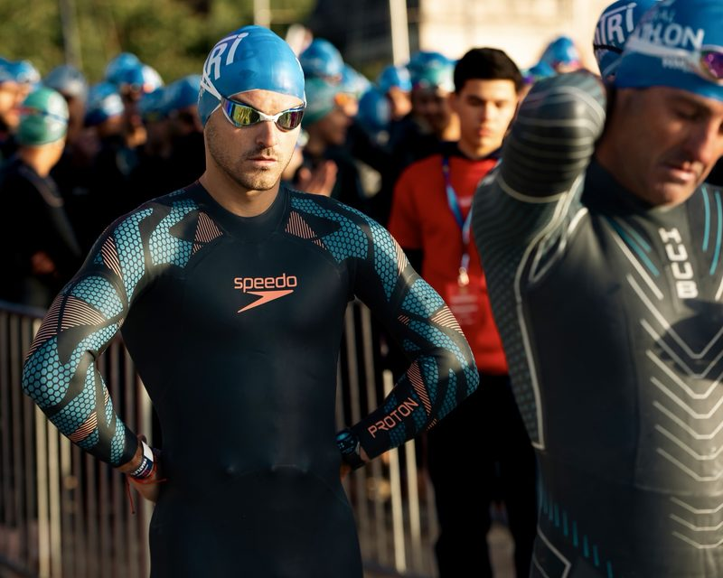
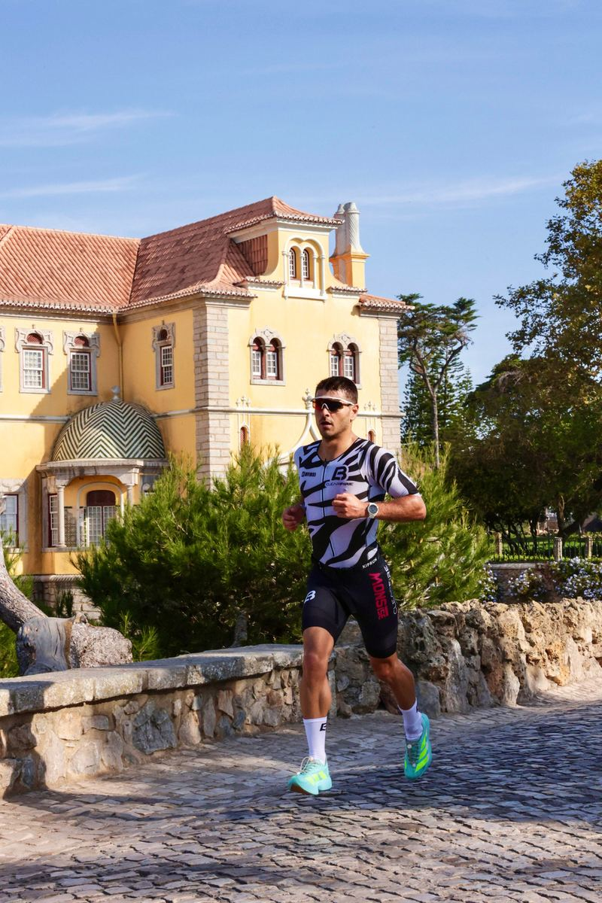
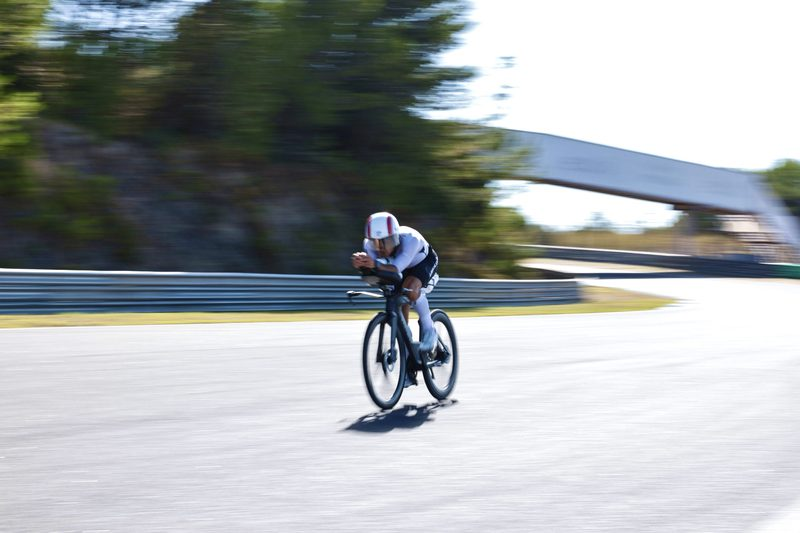
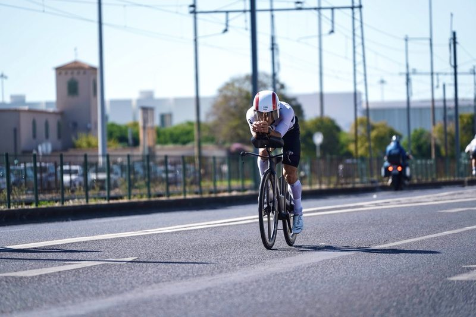
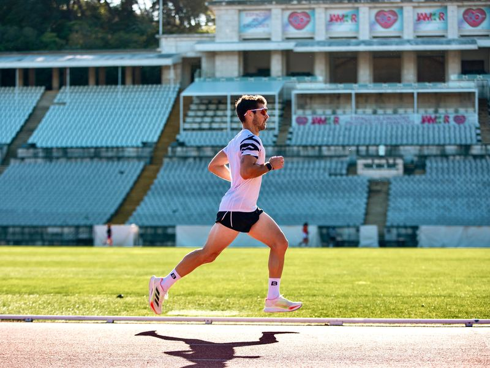
07 · Apoiar
Não é preciso seres uma marca para me ajudar a viver do triatlo. As contribuições vão para inscrições, viagens, treino e material da época 2027.
Campanha no GoFundMe
Por transferência ou MB WAY
Em nome de Gonçalo Carmo · Referência CARMO APOIO
Orçamento estimado da época 2027, em euros.
As inscrições seguem os preços oficiais publicados em outubro de 2026. Viagens e material são estimativas.
08 · Contacto
Patrocínios, parcerias e imprensa. Procuro marcas para 2027 e para as épocas seguintes.
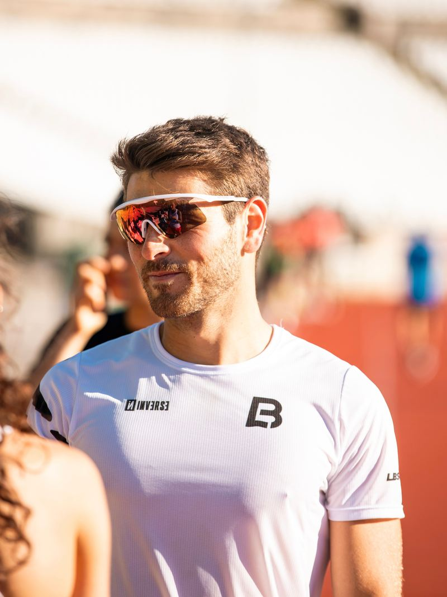